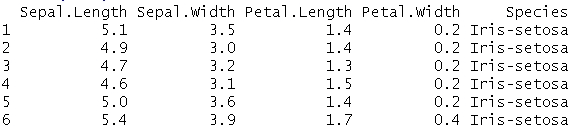
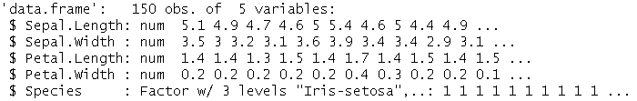
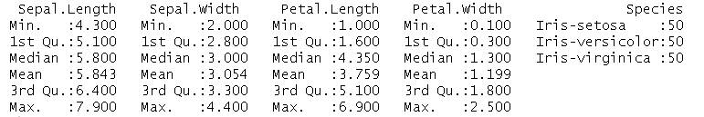
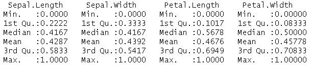
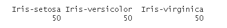
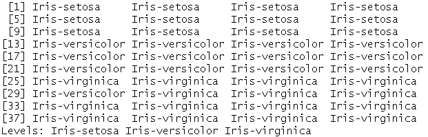
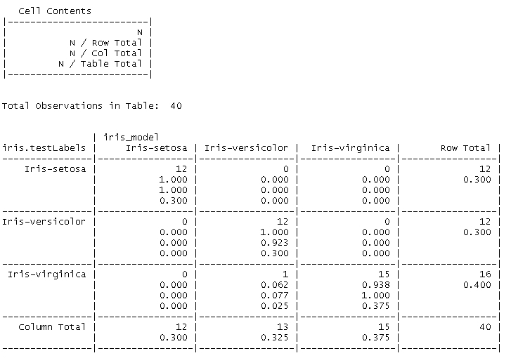
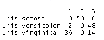

在机器学习领域有大量的算法，并且每年都有更多的算法被发明出来。在这个领域有大量的研究，因此算法的列表也越来越多。这也是一个事实，越多的算法被使用，越多的改进被发现。机器学习是工业界和学术界携手并进的一个领域。
但是，正如《蜘蛛侠》被告知拥有强大的力量就意味着巨大的责任一样，读者也应该理解眼前的责任。有这么多算法可用，有必要了解它们是什么，它们适合在哪里。一开始可能会感到不知所措和困惑，但那是因为将他们归类到家庭中会有所帮助。
机器学习算法可以以多种方式分类。最常见的方式是将它们分组为有监督学习算法和无监督学习算法。
监督学习指的是在称为训练数据集的预定义数据集上训练的算法。训练数据集通常是由输入元素和期望的输出元素或信号组成的二元元组。一般来说，输入元素是一个矢量。监督学习算法使用训练数据集来产生期望的函数。如此产生(或者更确切地说是推断)的函数然后被用来正确地映射新数据，更好地称为测试数据。
已经学习好的算法将能够以合理的方式正确地确定看不见的数据的输出。这就带来了泛化和过拟合的概念。
简而言之，一般化指的是这样的概念，其中算法基于(有限的)训练数据来一般化期望的函数，以便以正确的方式处理看不见的数据。过度拟合完全是一般化的相反概念，其中算法推断出一个函数，使得它精确地映射到训练数据集(包括噪声)。当对照新的/看不见的数据检查由算法学习的函数时，这可能导致巨大的误差。
泛化和过度拟合都围绕着输入数据中的随机误差或噪声。当一般化试图最小化噪声的影响时，过度拟合也通过拟合噪声来达到相反的效果。
使用监督方法解决的问题可分为以下步骤:
让我们详细看看一些监督学习算法。
正如前面提到的，回归帮助我们回答量化的问题。回归源于统计领域。研究人员使用线性关系来预测给定输入值X的输出值Y。这种线性关系称为线性回归或回归线。
数学上，线性回归表示为:
其中，b0是截距或直线与y轴相交的点。
b1是直线的斜率，即y的变化超过x的变化。
前面的等式与表示直线的方式非常相似，因此称为线性回归。
现在，我们如何决定哪条线适合我们的输入，以便它能很好地预测未知数据？为此我们需要一个误差度量。可以有各种误差测量；最常用的是最小二乘法。
在我们定义最小二乘法之前，我们首先需要了解术语残差。残差就是Y与拟合值的偏差。数学上:
其中，ŷi为y的偏差值。
最小二乘法表明，当残差平方和最小时，模型与数据的拟合最佳。
数学上:
我们使用微积分来最小化残差的平方和，并找到相应的系数。
现在我们已经了解了线性回归，让我们举一个真实世界的例子来看看它的作用。
假设我们有与学生身高和体重相关的数据。你体内的数据科学家突然开始思考这些孩子的体重和身高之间是否有任何关系。从形式上讲，一个孩子的体重可以根据他/她给定的身高来预测吗？
要拟合线性回归，第一步是了解数据，看两个变量(weight和height)之间是否存在相关性。因为在这种情况下，我们只处理两个维度，使用散点图可视化数据将有助于我们快速理解它。这也将使我们能够确定变量是否有某种线性关系。
让我们首先准备好我们的数据，并将其与相关系数一起显示在散点图上。
#Height and weight vectors for 19 children height <- c(69.1,56.4,65.3,62.8,63,57.3,59.8,62.5,62.5,59.0,51.3,64,56.4,66.5,72.2,65.0,67.0,57.6,66.6) weight <- c(113,84,99,103,102,83,85,113,84,99,51,90,77,112,150,128,133,85,112) plot(height,weight) cor(height,weight)
输出:
[1] 0.8848454
散点图如下所示:
该图显示了体重和身高维度的数据点
前面的散点图证明了我们关于体重和身高有线性关系的直觉是正确的。这可以使用相关函数进一步确认，该函数给出了值0.88。
是时候为我们的数据集准备模型了！我们使用内置的实用程序lm或线性模型实用程序来找到系数b0和b1。
#Fitting the linear model model <- lm(weight ~ height) # weight = slope*weight + intercept #get the intercept(b0) and the slope(b1) values model
输出如下所示:
您可以使用下面的命令进行更多的试验，找出由lm实用程序计算的更多细节。我们鼓励你继续尝试这些。
#check all attributes calculated by lm attributes(model) #getting only the intercept model$coefficients[1] #or model$coefficients[[1]] #getting only the slope model$coefficients[2] #or model$coefficients[[2]] #checking the residuals residuals(model) #predicting the weight for a given height, say 60 inches model$coefficients[[2]]*50 + model$coefficients[[1]] #detailed information about the model summary(model)
作为最后一部分，让我们想象一下散点图本身的回归线。
#plot data points plot(height,weight) #draw the regression line abline(model)
散点图如下图所示:
带回归计算回归线的散点图
因此，我们看到了如何识别两个变量之间的关系，以及如何使用几行代码进行预测。但是我们还没有完成。在决定是否使用线性回归之前，读者必须了解几个注意事项。
线性回归可用于预测给定输入的输出值，当且仅当:
- 散点图形成线性模式
- 它们之间的相关性中等至强(超过
0.5或-0.5)
仅满足前两个条件之一的情况可能导致不正确的预测或完全无效的模型。例如，如果我们只检查相关性并发现它很强，并跳过查看散点图的步骤，那么这可能会导致无效的预测，因为当数据本身遵循曲线形状时，您可能试图拟合直线(请注意，曲线数据集也可能具有高相关值，因此会出错)。
重要的是要记住相关性并不意味着因果关系。简单地说，两个变量之间的相关性并不一定意味着一个导致另一个。可能有这样一种情况，原因和结果是间接相关的，因为第三个变量被称为共同变量。用来描述这个问题最常见的例子就是鞋码和阅读能力的关系。从调查数据来看(如果有！可以推断，较大的鞋码与较高的阅读能力有关，但这显然并不意味着大脚会导致良好的阅读技能得到发展。有趣的是，小孩子的脚很小，还没有被教会阅读。在这种情况下，这两个变量更准确地与年龄相关。
对于我们之前使用的体重身高比的例子，你现在应该会得出类似的结论。是的，前面的例子也有类似的谬误，但它是一个易于使用的场景。你可以随意看看周围没有这种问题的案例。
线性回归在金融领域得到应用，它被用于量化投资风险等方面。它还广泛应用于经济领域的趋势线分析等。
除了线性回归、 logistic回归、逐步回归、、多元自适应 回归样条 ( MARS )、其他的都是一些比较有监督的回归学习算法。
从实现和理解的角度来看，k最近邻或KNN算法是最简单的算法之一。它们是另一种类型的监督学习算法，帮助我们对数据进行分类。
用“物以类聚，人以群分”这句话可以很容易地描述KNN，也就是说，相似的东西很可能具有相似的属性。KNN正是利用这一概念，根据数据点与其邻居的相似性来标记数据点。
形式上，KNN可以被描述为通过将最相似的已标记数据点(或训练样本)分配给未标记(或看不见)的数据点来分类它们的过程。
KNN是一种监督学习算法。因此，它从分类到不同类别的示例的训练数据集开始。然后，该算法选取测试数据集中的每个数据点，并基于选择的相似性度量，识别其 k 最近邻(其中k是预先指定的)。然后，该数据点被分配k个最近邻中的大多数的类别。
KNN的锦囊妙计是相似性度量。有各种相似性度量可供我们使用。选择哪一个取决于问题的复杂性、数据的类型等等。欧几里德距离就是这样一种被广泛使用的度量。欧几里得距离是两点之间最短的直接路线。从数学上讲，它是这样给出的:

曼哈顿距离、余弦距离和闵可夫斯基距离是可用于查找最近邻的一些其他类型的距离度量。
KNN算法的下一个参数是K-最近邻中的k。k的值决定了KNN模型对测试数据的概括程度。训练数据过拟合和欠拟合之间的平衡取决于k的值。稍加推敲，很容易理解，一个大的k会将噪声数据带来的方差影响降到最低，但同时也会破坏数据中微小但重要的模式。这个问题被称为偏差-方差权衡。
k的最佳值，即使很难确定，也位于极端值k=1到k=total number of training samples之间。常见的做法是将k的值设置为等于训练实例的平方根，通常在3到10之间。虽然这是一种常见的做法，但是k的值取决于要学习的概念的复杂性和训练示例的数量。
追求KNN算法的下一步是准备数据。用于准备输入向量的特征应该在相似的尺度上。此步骤的基本原理是距离公式取决于要素的测量方式。例如，如果与其他要素相比，某些要素具有较大范围的值，则距离测量将由这些测量主导。将特征缩放到相似比例的方法称为归一化。非常像距离测量，有各种归一化方法可用。一种这样的方法是最小-最大归一化，数学上给出为:
在我们开始用我们的例子来理解KNN之前，让我们概述一下执行KNN的步骤:
- 收集数据和探索数据:我们需要收集与要学习的概念相关的数据。我们还需要研究数据以了解各种特征，知道它们的值的范围，并确定类标签。
- 标准化数据:如前所述，KNN对距离测量的依赖性使得我们标准化数据以消除计算中的任何不一致或偏差变得非常重要。
- 创建训练和测试数据集:由于学习一个概念并准备一个模型来概括未知数据的可接受水平非常重要，因此我们需要准备训练和测试数据集。测试数据集，即使被标记，也用于确定模型概括所学概念的准确性和能力。通常的做法是将输入样本分为三分之二和三分之一部分，分别用于训练和测试数据集。同样重要的是，这两个数据集是所有类别标签和数据点的良好混合，也就是说，这两个数据集应该是完整数据的代表性子集。
- 训练模型:现在我们已经准备好了所有的东西，我们可以使用训练数据集、测试数据集、标签和
k的值来训练我们的模型并标记测试数据集中的数据点。 - 评估模型:最后一步是评估学习到的模式。在这一步中，我们确定与已知标签相比，算法对测试数据集的类别标签的预测有多好。通常为相同的情况准备一个混淆矩阵。
现在，让我们看看KNN的行动。眼前的问题是根据某些特征对不同种类的花进行分类。对于这个特殊的例子，我们将使用Iris数据集。这个数据集是默认安装的r。
iris #this should print the contents of data set onto the console.
如果您没有可用的数据集，不要担心！您可以按如下方式下载它:
#skip these steps if you already have iris on your system
iris <- read.csv(url("http://archive.ics.uci.edu/ml/machine-learning-databases/iris/iris.data"), header = FALSE)
#assign proper headers
names(iris) <- c("Sepal.Length", "Sepal.Width", "Petal.Length", "Petal.Width", "Species")
现在我们有了数据，是时候探索和理解它了。为了探索数据集及其属性，我们使用以下命令:
#to view top few rows of data head(iris)
输出:

#to view data types, sample values, categorical values, etc str(iris)
输出:

#detailed view of the data set summary(iris)
输出:

summary命令帮助我们更好地理解数据。它清楚地显示了不同的属性以及min、max、median和其他类似的统计数据。在接下来的步骤中，我们可能需要对数据或要素进行缩放或规范化，这些将对我们有所帮助。
在第一步中，我们通常标记输入数据。因为我们当前的数据集已经被标记，所以对于这个示例问题，我们可以跳过这一步。让我们直观地看到物种是如何传播的。我们再次利用著名的散点图，但是这次我们使用一个名为ggvis的包。
您可以将ggvis安装为:
install.packages("ggvis")
为了可视化所有3个物种的花瓣宽度和长度，我们使用以下代码片段:
#load the package library(ggvis) #plot the species iris %>% ggvis(~Petal.Length, ~Petal.Width, fill = ~factor(Species)) %>% layer_points()
注
ggvis包是r中的一个交互式图形包。它遵循一种独特的方式来表达输入以生成可视化。前面的代码片段使用管道操作符%>%将输入数据传递给ggvis，并再次使用管道操作符将输出传递给layer_points进行最终绘制。~操作符向ggvis表示Petal.Length是输入数据集(iris)中的一个变量。在http://ggvis.rstudio.com/ggvis-basics.html阅读更多关于ggvis的。
下一步是标准化数据，以便所有的特征都在相同的比例上。从数据探索步骤可以看出，所有属性的值或多或少都在一个可比较的范围内。但是，为了这个例子，让我们写一个最小-最大归一化函数:
#normalization function
min_max_normalizer <- function(x)
{
num <- x - min(x)
denom <- max(x) - min(x)
return (num/denom)
}
请记住，规范化不会改变数据，它只是缩放数据。因此，即使我们的数据不需要规范化，这样做也不会造成任何伤害。
#normalizing iris data set normalized_iris <- as.data.frame(lapply(iris[1:4], min_max_normalizer)) #viewing normalized data summary(normalized_iris)
以下是标准化数据框的摘要:

既然我们已经规范化了数据，我们可以将它分成训练和测试数据集。我们将遵循通常的将数据一分为二的三分之二三分之一规则。如前所述，两个数据集都应该代表整个数据，因此我们需要选择适当的样本。我们将利用R的sample()函数来准备样品。
#checking the data constituency table(iris$Species)
输出:

#set seed for randomization set.seed(1234) # setting the training-test split to 67% and 33% respectively random_samples <- sample(2, nrow(iris), replace=TRUE, prob=c(0.67, 0.33)) # training data set iris.training <- iris[ random_samples ==1, 1:4] #training labels iris.trainLabels <- iris[ random_samples ==1, 5] # test data set iris.test <- iris[ random_samples ==2, 1:4] #testing labels iris.testLabels <- iris[ random_samples ==2, 5]
一旦我们在训练和测试数据集中准备好了数据，我们就可以进行下一步，使用KNN从数据中学习。R中的KNN实现存在于类库中。KNN函数接受以下输入:
train:包含训练数据的数据框。test:包含测试数据的数据框。class:包含类别标签的向量。也称为因子向量。k:k近邻的值。
对于当前情况，让我们假设k的值为3。奇数通常擅长打破平局。KNN被处决为:
#setting library library(class) #executing knn for k=3 iris_model <- knn(train = iris.training, test = iris.test, cl = iris.trainLabels, k=3) #summary of the model learnt iris_model
输出:

快速扫描输出显示，除了virginica的一个杂色标签之外，其他都是正确的。虽然这个很容易发现，但是还有更好的方法来评估这个模型。
这将我们带到的最后一步，我们评估模型。我们通过准备一个混淆矩阵或交叉表来帮助我们理解预测的标签相对于测试数据的已知标签是怎样的。r为我们提供了另一个名为CrossTable()的实用函数，它存在于gmodels库中。让我们看看输出:
#setting library library(gmodels) #Preparing cross table CrossTable(x = iris.testLabels, y = iris_model, prop.chisq=FALSE)
输出:

从前面的输出中，我们可以得出结论，模型将virginica的一个实例标记为versicolor，而所有其他测试数据点都被正确标记。这也有助于我们推断k=3的选择确实足够好。我们建议读者用不同的k值来尝试相同的例子，看看结果的变化。
KNN是一种简单而强大的算法，它对基础数据分布不做任何假设，因此可用于要素和类之间的关系复杂或难以理解的情况。
缺点是，KNN是一种资源密集型算法，因为它需要大量的内存来处理数据。对距离测量和缺失数据的依赖需要额外的处理，这是该算法的另一个开销。
尽管有其局限性，KNN仍被用于许多现实生活中的应用，如文本挖掘、预测心脏病发作、预测癌症等。KNN在金融和农业领域也有应用。
无监督学习指的是自动学习概念的算法。现在我们已经熟悉了监督学习的概念，让我们利用我们的知识来理解无监督学习。
与需要标记输入训练数据集的监督学习算法不同，无监督学习算法的任务是在没有任何标记训练数据集的情况下，在数据中查找关系和模式。这些算法处理输入数据以挖掘规则、检测模式、总结和分组数据点，这有助于获得有意义的见解，并向用户描述数据。在无监督学习算法的情况下，没有训练和测试数据集的概念。相反，如前所述，输入数据被分析并用于导出模式和关系。
与监督学习类似，非监督学习算法也可以分为两大类:
让我们看看一些无监督学习算法。
这个风靡全球的算法是由Agarwal和Srikant在1993年提出的。该算法旨在处理事务性数据，其中每个事务都是一组项或项集。算法简而言之就是识别项目集，这些项目集是数据集中至少C个事务的子集。
形式上，让┬是一组项目，D是一组事务，其中每个事务T是┬的子集。数学上:
那么关联规则是形式X → Y的隐含，其中事务T包含X作为┬的子集，并且:
如果包含X的D中的c%事务也包含Y，则在具有置信因子c的事务集合D中，蕴涵X → Y成立。如果D中事务的s%包含X U Y，则称关联规则X → Y的支持因子为s。因此，给定一组交易D，识别关联规则的任务意味着生成所有这样的规则，这些规则具有大于用户定义的阈值的置信度和支持度，该阈值被称为minsup(用于最小支持度阈值)和minconf(用于最小置信度阈值)。
大体上，该算法分两步工作。第一个是识别出现次数超过预定阈值的项目集。这样的项目集称为频繁项目集。第二步是从识别出的满足最小置信度和支持度约束的频繁项集生成关联规则。
使用以下伪代码可以更好地解释这两个步骤:
现在让我们来看看算法的运行。考虑中的数据集是UCI机器学习知识库的Adult数据集。该数据集包含具有性别、年龄、婚姻状况、国籍和职业等属性的人口普查数据，以及工作阶级、收入等经济属性。我们将使用这个数据集来确定人口普查信息和个人收入之间是否存在关联规则。
Apriori算法存在于arules库中，所考虑的数据集被命名为Adult.,它也可用于默认的R安装。
# setting the apriori library
library(arules)
# loading data
data("Adult");
是时候探索我们的数据集并查看一些样本记录了:
# summary of data set summary(Adult); # Sample 5 records inspect(Adult[0:5]);
我们知道数据集包含一些有115列的48k事务。我们还可以根据项目集的大小获得关于项目集分布的信息。inspect函数让我们得以窥见示例事务以及每一列所包含的值。
现在，让我们建立一些关系:
# executing apriori with support=50% confidence =80%
rules <- apriori(Adult, parameter=list(support=0.5, confidence=0.8,target="rules"));
# view a summary
summary(rules);
#view top 3 rules
as(head(sort(rules, by = c("confidence", "support")), n=3), "data.frame")
Apriori算法使用Adult数据集作为输入来识别事务数据中的规则和模式。在查看概要时，我们可以看到该算法成功地识别出分别满足50%和80%的支持度和置信度约束的84规则。现在我们已经确定了规则，让我们看看它们是什么:
规则形式为X→ Y，其中X为lhs或左侧，Y为rhs或右侧。前面的图像也显示了相应的置信度和支持值。从输出中我们可以推断，如果人们全职工作，那么他们面临资本损失的机会几乎为零(置信因子95.8%)。另一个规则有助于我们推断，为私人雇主工作的人也几乎没有面临资本损失的机会。这种规则可以用来制定社会福利、经济改革等方面的政策或计划。
除了Apriori之外，还有其他关联规则挖掘算法，如FP Growth、ECLAT和许多其他算法，这些算法多年来已被用于各种应用。
在无监督聚类算法的世界中，最简单和最广泛使用的算法是K-Means。正如我们最近看到的，无监督学习算法在没有任何先验标签或训练的情况下处理输入数据以得出模式和关系。聚类算法尤其有助于我们对数据点进行聚类或划分。
根据定义，聚类是指将对象分组到组中的任务，使得一个组中的元素比其他组中的元素彼此更相似。K-Means以无监督的方式做同样的事情。
数学上，给定一组n观察值{x1,x2,…,xn}，其中每个观察值是一个 d 维向量，该算法试图通过最小化目标函数将这些 n 观察值划分为k (≤ n)集合。
与其他算法一样，可以有不同的目标函数。为了简单起见，我们将使用被称为的最广泛使用的函数，其具有聚类平方和或 WCSS函数。
这里的μi是分区Si中点数的平均值。
该算法遵循简单的两步迭代过程，其中第一步称为分配步骤，随后是更新步骤。
- 通过设置
k分区的方式进行初始化:m1,m2…mk - 直到均值不变或者变化低于某个阈值:
- 分配步骤:将每个观测值分配到一个其带内聚类平方和值最小的分区，也就是将该观测值分配到一个其均值最接近该观测值的分区。
- 更新步骤:对于
1 to k中的i，基于该分区中的所有观测值更新每个均值mi。 T34
该算法可以使用不同的初始化方法。最常见的是Forgy和随机划分方法。我鼓励你多读读这些。此外，除了输入数据集之外，该算法还需要k的值，即要形成的聚类数。最佳值可能取决于各种因素，通常根据使用案例来决定。
让我们看看算法的运行。
我们将再次使用我们已经用于KNN算法的虹膜花数据集。对于KNN，我们已经标记了物种，然后尝试学习并将测试数据集中的数据点分类到正确的类别中。
使用K-Means，我们还旨在实现相同的数据划分，但没有任何标记的训练数据集(或监督)。
# prepare a copy of iris data set kmean_iris <- iris #Erase/ Nullify species labels kmean_iris$Species <- NULL #apply k-means with k=3 (clusters <- kmeans(kmean_iris, 3))
现在我们有了来自k-means的输出，让我们看看它如何很好地划分了不同的物种。记住，k-means没有分区标签，只是简单地将数据点分组。
# comparing cluster labels with actual iris species labels. table(iris$Species, clusters$cluster)
输出:

输出显示物种setosa匹配集群标签2，versicolor匹配标签3，依此类推。从视觉上，很容易看出数据点是如何聚集的:
# plot the clustered points along sepal length and width
plot(kmean_iris[c("Sepal.Length", "Sepal.Width")], col=clusters$cluster,pch = c(15,16,17)[as.numeric(clusters$cluster)])
points(clusters$centers[,c("Sepal.Length", "Sepal.Width")], col=1:3, pch=8, cex=2)

K-Means在计算机图形学等领域得到广泛应用，用于颜色量化；它与其他算法相结合，用于自然语言处理、计算机视觉等。
k-means有不同的变体(R本身提供三种不同的变体)。除了k-means之外，其他无监督聚类算法有k-medoids、层次聚类等。